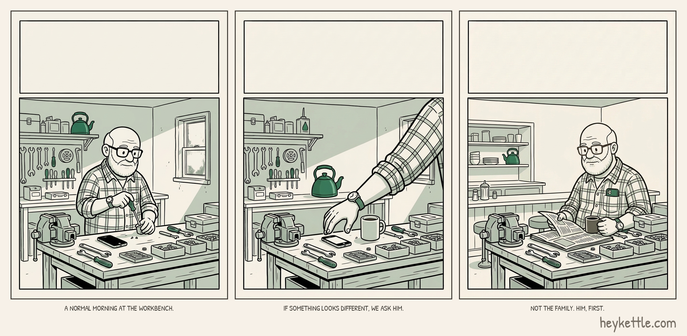
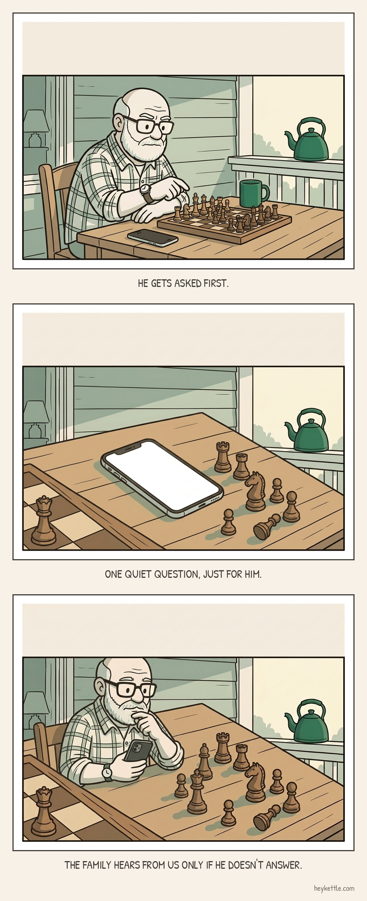
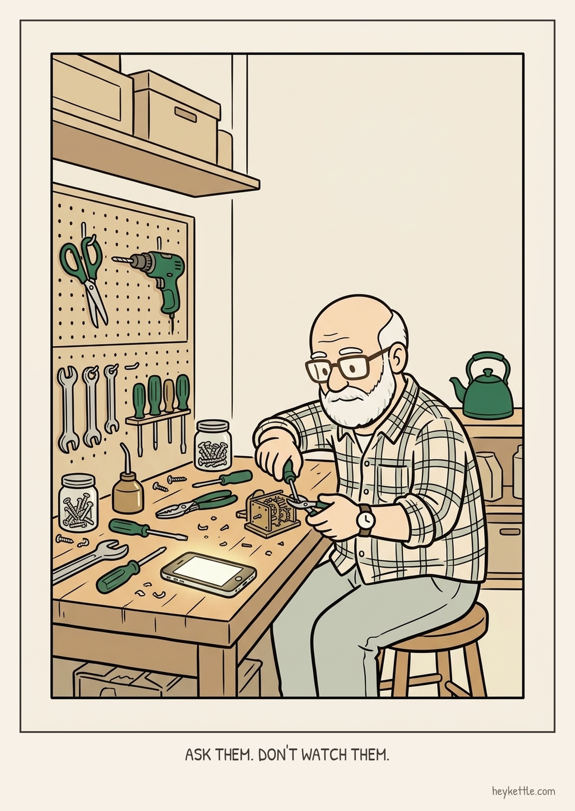
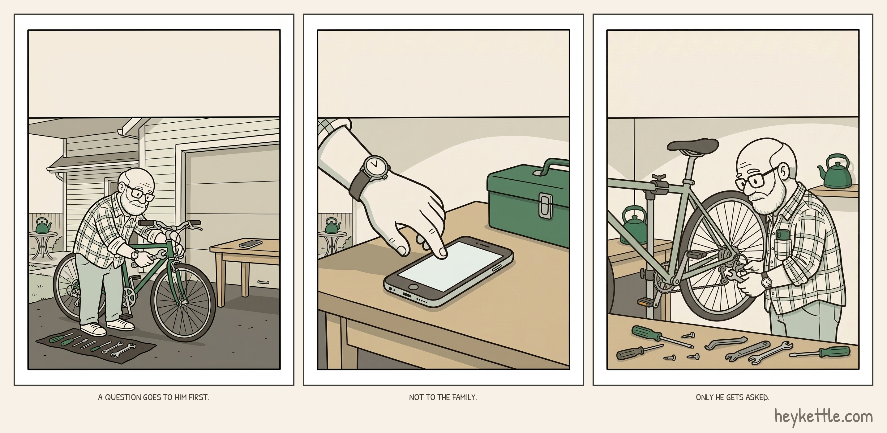
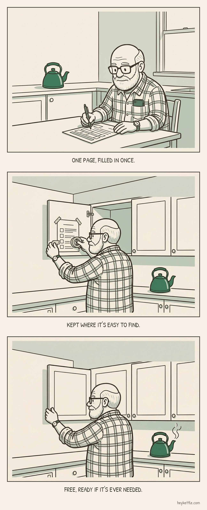
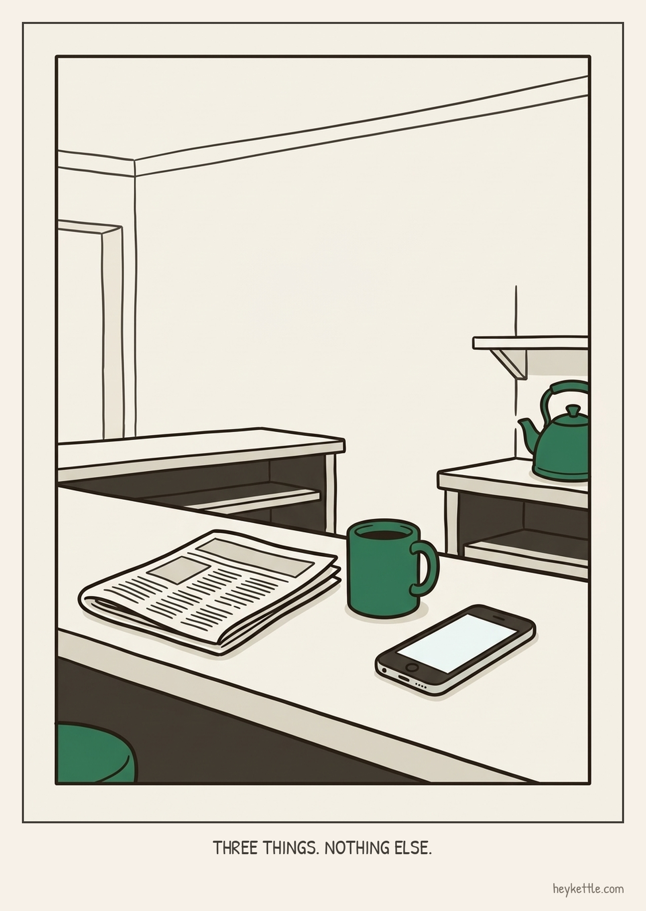
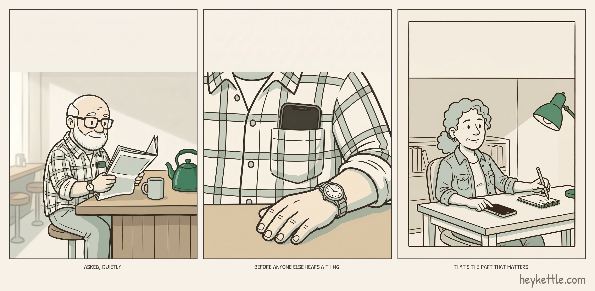
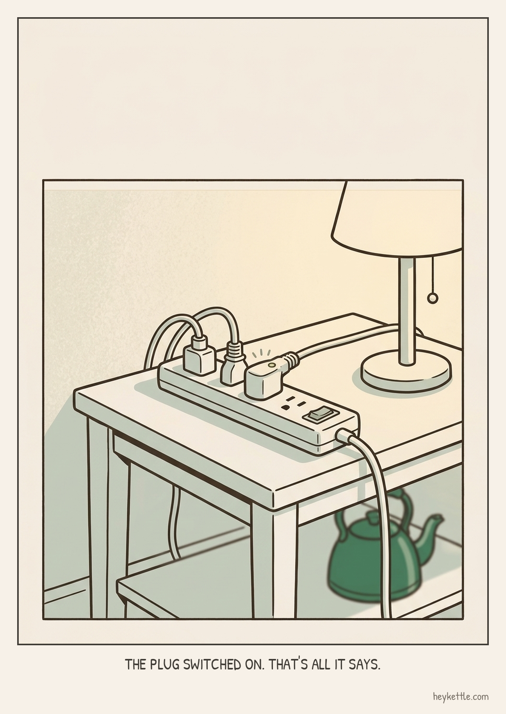
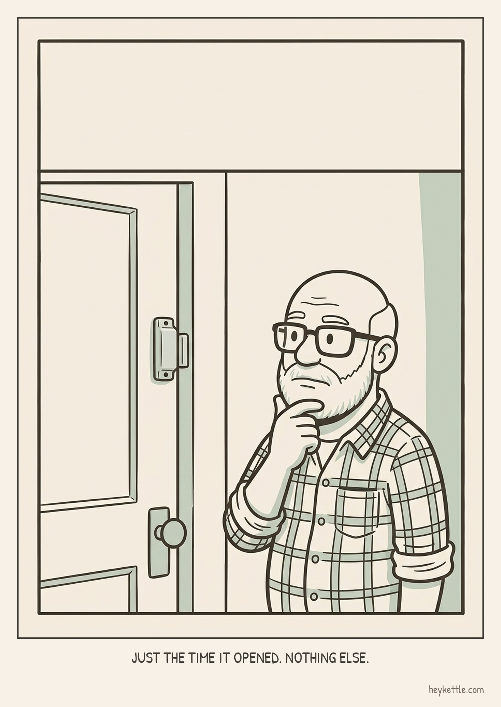

The question is for the parent, not about them. When a morning looks different, Kettle asks him first, quietly, before the family hears a thing.
MonX

Long-press the image to save it to your phone.
I didn't want something that watches my parents and reports back. I wanted something that asks them first, quietly, before I ever hear a thing. That's the whole idea behind Kettle.
Alt text (provisional): Three-panel comic strip: Walt stands at his garage workbench on a normal morning, his phone lights up quietly beside his coffee, and he reads the newspaper at the diner counter with the phone back in his shirt pocket. Captions: A normal morning at the workbench. If something looks different, we ask him. Not the family. Him, first. CTA: none
Note from the writer
Self-check: no banned words, no verdict/score, 'normal' used correctly, no em dash, no kinship/culture words, no medical claim, no invented quote or number, Walt shown capable and unhurried throughout, no CTA.
TuePinterest
Why Kettle asks the parent first, not the family

Long-press the image to save it to your phone.
Why Kettle asks the parent first, not the family
When a morning doesn't look like his own, Kettle sends one quiet question to him, not a report to everyone else. Only if he doesn't answer does the family hear anything at all.
Link: heykettle.com Alt text (provisional): Three-panel comic strip stacked: Walt plays chess on the porch with his phone screen-down beside the board, the phone lights up plainly on the table, and he glances at it before returning to the game. Captions: He gets asked first. One quiet question, just for him. The family hears from us only if he doesn't answer. CTA: none
Note from the writer
Self-check: no banned words, no verdict, no em dash, no kinship/culture words, no medical claim, no invented stat, Walt shown capable and busy with his own game throughout, no CTA, link is the brand home rather than a guessed URL.
WedTikTok
Ask them, don't watch them

Long-press the image to save it to your phone.
Ask them. Don't watch them.
Time
Say
Overlay
Shot
0:00-0:08
My parents are a long flight away. For a while I thought I wanted updates on them.
I used to want updates on them
Founder face to camera, kitchen counter behind him.
0:08-0:20
Now I want them asked, not watched. If a morning looks different, Kettle asks my parent first, quietly.
Ask them. Don't watch them.
Founder face to camera, thoughtful pause.
0:20-0:32
Only if they don't answer does our family hear anything at all.
Only then does the family hear
Neutral b-roll: a plain phone face down on a kitchen table, no app visible, morning light.
0:32-0:40
That's the whole idea. Ask first.
Ask first.
Founder face to camera, small smile, kettle visible on the counter behind him.
Alt text (provisional): Cover image: Walt sits at his workbench in warm evening light, his phone lit face up beside him, going about his own business. Caption: Ask them. Don't watch them. CTA: none
Note from the writer
Self-check: no banned words, no verdict, no em dash, no kinship/culture words, no medical/safety claim, no invented quote or number, no app screen in b-roll, quiet takeaway close with no CTA. Visual privacy checks (real background, no private info visible) are pending until actual footage is shot -- this is a script for recording, not a finished video.
ThuX

Long-press the image to save it to your phone.
Kettle doesn't ask me if my parents are okay. It asks them. Only if they don't answer does our family hear a thing. Apply for the family beta at heykettle.com.
Alt text (provisional): Three-panel comic strip: Walt tends his bicycle in the driveway with his phone resting on the workbench, a close view of the phone's plain lit screen, and Walt back at work with the phone returned to his shirt pocket. Captions: A question goes to him first. Not to the family. Only he gets asked. CTA: yes
Note from the writer
Self-check: no banned words, no verdict, no em dash, no kinship/culture words, no medical claim, no invented number, CTA is the exact approved line, first of the week's two CTAs.
FriPinterest
A free one-page emergency info sheet

Long-press the image to save it to your phone.
A free one-page emergency info sheet
Everything a family needs in one place if something ever goes wrong: doctors, medications, who to call. Free, no email required.
Link: heykettle.com/resources/emergency-info/ Alt text (provisional): Three-panel comic strip stacked: Walt fills in a one-page sheet at his kitchen table, tapes the finished sheet inside a cupboard door, and closes the cupboard with a small green kettle steaming behind him. Captions: One page, filled in once. Kept where it's easy to find. Free, ready if it's ever needed. CTA: none
Note from the writer
Self-check: no banned words, no verdict, 'normal' not used, no em dash, no kinship/culture words, no medical claim (the sheet itself is neutral prep, not a claim Kettle makes), no invented number, links to the exact URL given in the brief's own example rather than a guessed slug, Walt shown capable and organised, no CTA.
SatTikTok
Three things, nothing else

Long-press the image to save it to your phone.
Three things. Nothing else.
Time
Say
Overlay
Shot
0:00-0:08
Kettle keeps three things about my parents. Who. Which normal routine. When.
Three things. Nothing else.
Founder face to camera, kitchen counter behind him.
0:08-0:20
Not what they said on the phone. Not who they called. Not where they went.
Not what was said or where they went.
Founder face to camera, steady.
0:20-0:32
Just that today looked like their day, noticed on the phone they already carry.
Just that today looked like their day.
Neutral b-roll: a plain phone face up on a kitchen table, no app visible, morning light.
0:32-0:42
If you live far from your parents too, we're taking founding families now. Apply for the family beta at heykettle.com.
Apply for the family beta at heykettle.com
Founder face to camera, direct to lens.
Alt text (provisional): Cover image: Walt's phone lies face up on the diner counter beside his coffee and a folded newspaper, screen lit but plain, calm morning light. Caption: Three things. Nothing else. CTA: yes
Note from the writer
Self-check: no banned words, no verdict, no em dash, no kinship/culture words, no medical/safety claim, no invented quote or number, CTA is the exact approved line and the second and last of the week's two CTAs. Visual privacy checks pending until actual footage is shot.
SunX

Long-press the image to save it to your phone.
The question was never really for me. It goes to my parents, quietly, before I hear a thing. That's the part I didn't expect to matter most.
Alt text (provisional): Three-panel comic strip: Walt reads his newspaper at the diner counter with his phone barely visible in his shirt pocket, a close view of his shirt pocket with the phone screen dark, and Dana glancing at her own phone at a home office desk before relaxing back into her work. Captions: Asked, quietly. Before anyone else hears a thing. That's the part that matters. CTA: none
Note from the writer
Self-check: no banned words, no verdict, no em dash, no kinship/culture words, no medical claim, no invented number, closes the week's theme with no CTA.
ExtraX

Long-press the image to save it to your phone.
If something in a parent's house can call an address (a smart plug, a door sensor, a voice routine), the family sees when it fired. Just the time, like Plug, 8:05 this morning. Kettle decides nothing from it.
Alt text (provisional): Single-panel illustration: a plain smart plug beside a lamp on a side table in Walt's living room, a small indicator light on, plain room, morning light. Caption: The plug switched on. That's all it says. CTA: none
Note from the writer
One-off request (weekly-task.md, added 2026-09-25): facts only from specs/020-household-devices.md and webapp/src/lib/copy.ts (DEVICE_LINE_MORNING = '{kind}, {time} this morning', matches 'Plug, 8:05 this morning' exactly). No person- or household-grade claim; the household event is never presented as evidence a specific person is fine (root CLAUDE.md hard constraint 6). Self-check: no banned words about Kettle itself (device names like 'sensor' describe the third-party household object, per spec 020's own vocabulary, not Kettle's mechanism), no verdict, no em dash, no kinship/culture words, no medical claim, no invented number, no CTA.
ExtraPinterest
A device you already have, one quiet fact

Long-press the image to save it to your phone.
A device you already have, one quiet fact
A smart plug, a door sensor, or a voice routine already in a parent's home can tell Kettle the time it fired, like Plug, 8:05 this morning. Nothing more. Kettle decides nothing from it.
Link: heykettle.com Alt text (provisional): Single-panel illustration: a small, plain door sensor mounted on the frame of Walt's front door, plain daylight, no alarms, no red lights. Caption: Just the time it opened. Nothing else. CTA: none
Note from the writer
One-off request (weekly-task.md, added 2026-09-25): same facts and constraint as the Extra X post above. Self-check: no verdict, no em dash, no kinship/culture words, no medical claim, no invented number, no CTA, link is the brand home rather than a guessed URL.